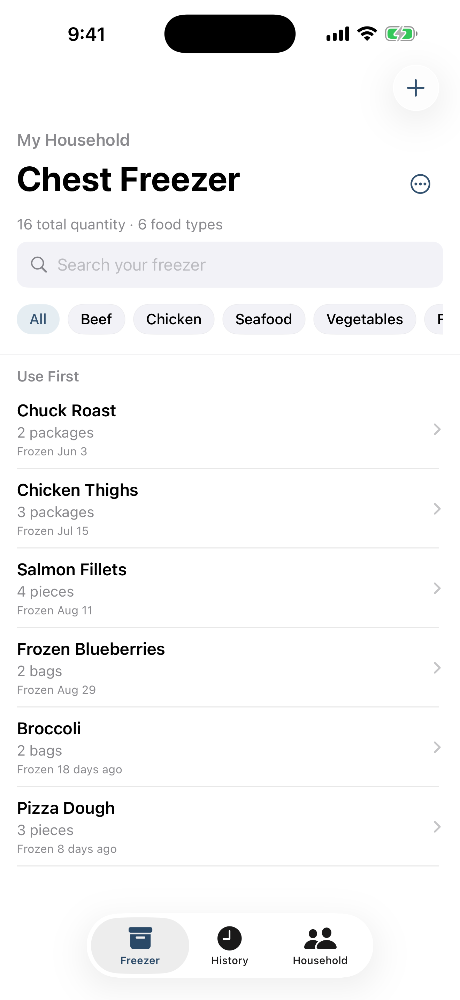
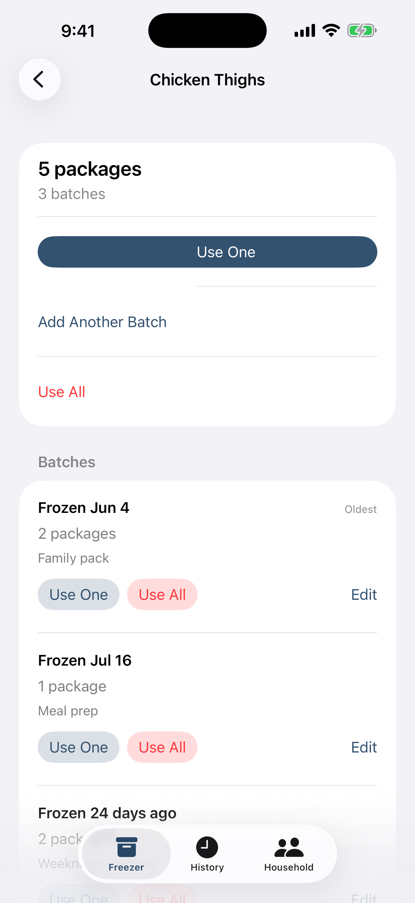

We tend to stock up on meat and other foods when they are on sale. That works well until the freezer is full enough that I can no longer remember what is actually in it. I might know we bought chicken a few weeks ago, but not whether there are three packages left or none. Something useful can be sitting under a bag of vegetables while I am at the store buying another one.
The problem is not that we have too little food. It is that the food we have is hard to see. I wanted a dependable way to answer two ordinary questions: at the beginning of the week, “What do we already have that we can build meals around?” and before shopping, “What do we actually need?” That problem eventually became one of the reasons I built FreezerFiles.
A full freezer can still feel empty
A chest freezer is especially good at hiding things. Food gets stacked, the newest package lands on top, and anything small works its way toward the bottom. A dedicated upright freezer is easier to scan, but once the shelves are crowded, memory is still doing too much of the work.
I used to look through the top layer, recognize a few items, and assume I had a reasonable picture of the whole freezer. Usually I did not. A freezer inventory gives me the missing view: the names, quantities, frozen dates, and locations without requiring a cold excavation every time we plan dinner.
Start meal planning with what you already have
At the beginning of the week, I open the inventory before deciding what sounds good. The small change is to start with “What do we already have?” instead of “What should we buy?” It gives meal planning a useful constraint and often makes the first few decisions obvious.

If the freezer contains:
- Chicken thighs
- Ground beef
- Salmon fillets
- Broccoli
- Pizza dough
then much of the week already has a starting point. Chicken and broccoli can anchor one dinner, salmon another, and the pizza dough gives us an easy option for a busier night. I am not trying to turn the inventory into a recipe planner. I just want it to remind me which ingredients are ready to be used so I can make a realistic plan around them.
Check the freezer before making the grocery list
I check the same inventory again when we make the grocery list. Having it on my phone means I can answer practical questions without relying on a vague memory of the last time I looked inside:
- Do we already have chicken?
- Is there ground beef left?
- Which freezer has the salmon?
- Did we use the last frozen vegetables?
- What are we genuinely running low on?
That visibility can help us avoid accidentally buying something we already have. It also makes the list more specific. Instead of shopping for an imagined empty freezer, we can buy the fresh items and missing ingredients that complete meals based on what is already stocked.
Keep separate batches
The same food often enters our freezer at different times. If I add a package of chicken thighs today, I do not merge it with a package that was frozen a few months ago. They remain separate batches with their own quantities and frozen dates.
That detail matters because “chicken thighs: two” does not tell me that one is an older batch and one is newer. Separate batches preserve useful context while still letting me see the total amount on hand.
Use older food first
When I am choosing between two similar items, I usually want to know which one has been there longer. FreezerFiles has a Use First view for exactly that decision. If one package was frozen months before another, the older frozen date is a useful organizational cue when deciding what to cook.
Those dates provide organization and quality context only. They do not determine expiration, food safety, or whether something is safe to eat. The app keeps the information I entered visible; judgment about the food stays with the person preparing it.

Keep the inventory current
Any inventory system becomes decoration if updating it is a chore. The routine that works for us is deliberately small: add food when it goes into the freezer, and reduce the quantity when it comes out. Quick Add makes familiar foods faster to enter, while Use One handles the common case of taking out a single package.
History keeps a record of what was used and makes it easier to add a familiar item again. Household sharing helps everyone work from the same inventory instead of maintaining separate notes. Updates still depend on people recording what they do, but lowering the effort makes the habit much easier to keep.
The system we ended up building
Eventually this became the workflow behind FreezerFiles — an iPhone app I built because I wanted a simple way to know what we had without digging through the freezer every time. It keeps a freezer inventory with separate batches and frozen dates, a Use First view, support for multiple freezers, household sharing, Quick Add, and History.
The app is only one part of the system. The useful part is the habit: record food as it goes in, record it as it comes out, and look at what is already there before planning the week or walking into the grocery store. A stocked freezer is much more helpful when its contents are visible.